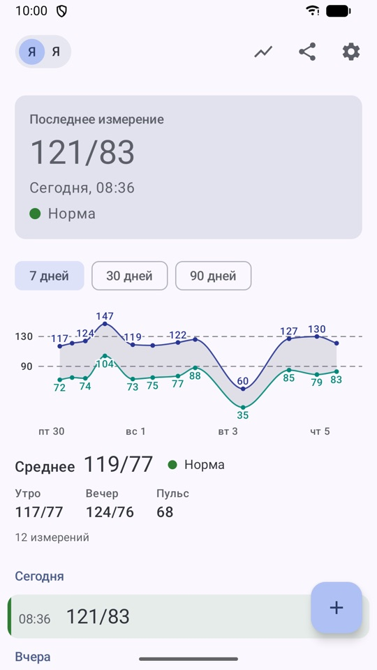

Мониторинг артериального давления
Дневник артериального давления для Android. Записать измерение — несколько секунд, а история и графики покажут, как давление меняется день ото дня.
Бесплатно, без рекламы. Android 8 и новее.

Что умеет
- Быстрый вводВерхнее, нижнее и пульс — только цифры. Дата и время ставятся сами, их можно поправить.
- История с подсветкойИзмерения сгруппированы по дням, цвет строки подсказывает, на какие значения обратить внимание.
- Графики и средниеЗа день, неделю, месяц, три месяца, год или всё время. Отдельно средние утром и вечером.
- Отправить врачу или близкимКартинкой, PDF, текстом или таблицей CSV — в любой мессенджер или почту.
- До трёх человек на одном телефонеУ каждого свой дневник: например, у вас и у родителей.
- Резервная копия в файлСохраните все данные одним файлом — на телефон, Яндекс Диск или Google Drive — и восстановите на новом телефоне или планшете.
- Без интернетаПриложение не запрашивает никаких разрешений и никуда не отправляет данные само. При переезде на новый телефон они переносятся и вместе с резервной копией Android.
Что значат цвета
По верхнему давлению, мм рт. ст.
| Очень низкое | ниже 70 |
| Пониженное | 70–109 |
| Норма | 110–129 |
| Повышенное | 130–149 |
| Высокое | 150 и выше |
Важно
Приложение — дневник для личного учёта. Цветовая подсветка носит ознакомительный характер: это не диагноз и не медицинская оценка. Приложение не является медицинским изделием и не заменяет консультацию врача. Если показания или самочувствие вас беспокоят, обратитесь к врачу.